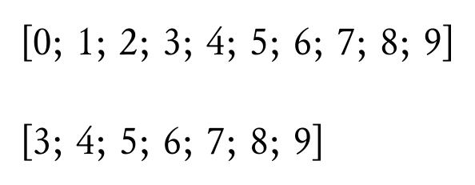

このページでは、SATySFi で使える「モジュール」という機能について解説します。
メモ: SATySFi のモジュールに関する公式ドキュメントは執筆時点ではまだ無いので、このページに書かれていることは変更される可能性があります。 SATySFi version 0.0.3 時点では OCaml のモジュールと構文が似ているので、OCaml のマニュアル "Chapter 2 The module system" や M.Hiroi さんの「お気楽 OCaml プログラミング入門 モジュール」もある程度参考になります。
SATySFi におけるモジュールは、名前空間を切り分けつつ実装を抽象化したいときに便利な言語機能です。module 名前 = struct 定義列 end という記法で作成することができます。通常の変数名と異なり、モジュール名の 1 文字目は大文字でなければいけません。
コード例
module ExampleModule = struct
let foo = 42
let bar n = n + 42
end
モジュール M 内にある foo という変数は M.foo とピリオドでつなぐことで指定できます。
コード例
+p {
foo = \show-int(ExampleModule.foo);
}
+p {
bar 42 = \show-int(ExampleModule.bar 42);
}
コード例の組版結果 (SATySFi version 0.0.3)

中級者向け: SATySFi version 0.0.3 ではまだドキュメントされていませんが、module open に関して以下の構文が用意されています (Issue #79)。
open M という構文でそこから下において全域的にモジュールを open できます。open M in ... という構文で局所的にモジュールを open できます。M.( ... ) という構文で局所的にモジュールを open できます。コード例
module ExampleModule = struct
let foo = 42
let bar n = n + 42
end
% 以下の 2 つは let baz = ExampleModule.bar ExampleModule.foo と等価です
let _ =
open ExampleModule in
bar foo
let _ = ExampleModule.(bar foo)
% 以下のようにも書けます (これより下で ExampleModule がすべて open されます)
open ExampleModule
let _ = bar foo
→ シグネチャ